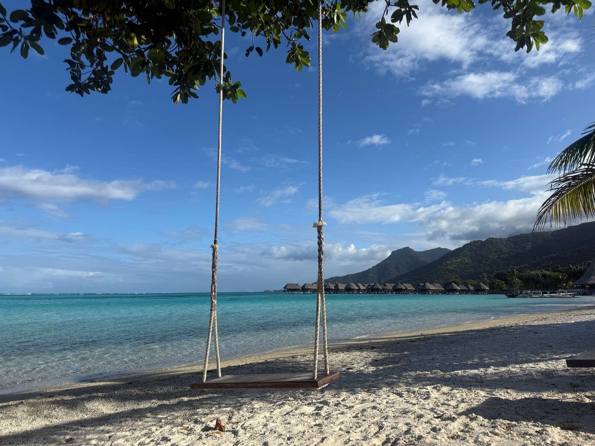

2025 = 3⁴×5²=45²
On January 1st of each year, I calculate the prime factorization of the new year. This is because
Imagine my surprise when I learned 2025 was a square year. Square years only get rarer over time, as the distance between each square number increases by 2n+1 (where n is the nth prime number).
Despite the rarity of square years, my word of the year was abundance, specifically to shift from a scarcity mindset to an abundance mindset. Growing up in an immigrant household, the scarcity mindset shaped how my parents built their lives in America. My maternal great-grandparents were highly educated scholars who lost their wealth multiple times in war and revolution. Thus, my parents instilled in me the importance of prioritizing education, saving instead of spending, and avoiding risky situations from an early age.
Don’t get me wrong, these tenets set me up for academic, financial, and professional success early on. However, as I am beginning to build my own life, that very structure became a cage. Prioritizing work and education caused me to fall behind on house chores and feeding myself (no, shrimp chips and seaweed are not a meal). Fear of spending money made me feel guilty every time I bought something I had earned. Avoiding taking risks never challenged the status quo.
My parents did not come to this country so I could live in fear. In 2025, I turned the scarcity mindset on its head.
One way I moved from a scarcity to an abundance mindset is by controlling money instead of letting money control me. I used my Excel skills to build out a budget and spending tracker, and I named her Aimouk. Aimouk helps me understand which spending categories matter most to me (food and travel), cancel unused subscriptions (why is everything a darn subscription), and gamify understanding my personal finances.
Soon, I was researching different budgeting methods, seeing if there were ways I could automate my tracker, and watching a ton of personal finance content. Now, instead of spending out of guilt, Aimouk provides me with mathematical proof that I can afford dropping $118 on Lululemon leggings or a few bands on a romantic trip to French Polynesia. And boy, does that feel good.
Personal finance is an area that I am passionate about, so more to come on this in 2026!
Another hack to adopting an abundance mindset: surround yourself with people who want to see you grow. The credit goes to my amazing boyfriend on this one, who got inspired after listening to Tahiti by Keen’ V on repeat. Soon, the song lyrics became our trip itinerary, and we went on a once-in-a-lifetime trip to four French Polynesian islands: Moorea, Huahine, Bora Bora, and Tahiti. We swam with sharks and stingrays, ate tons of raw tuna, stayed in an overwater bungalow, and produced an Adam Levine-approved music video.
As a PTO whore hoarder, I had the scarcity mindset that taking too many days off would deteriorate my performance at work when in reality, I needed time to recharge and reset. PTO is meant to be taken, not saved. Abundance, not scarcity.
I love traveling: it opens my big-city-girl-working-in-consulting eyes to new experiences, people, and languages. I satisfy my thirst for knowledge by walking around a classical Roman Forum or snorkeling in a coral barrier reef more than I ever will at a desk job. Honorable mentions for this category include Toronto, Chicago, Vancouver, and Nashville.
In school, vacation was my much-needed break from learning different subjects. Now, taking vacation is my much-needed dose of learning about the world outside Microsoft Teams. French Polynesia put this in perspective for me.
I have become what I most feared: a podcast bro. I’ve read about how the 2024 U.S. Presidential Election was won in large part due to a rightward shift in Gen-Z men who listen to political podcasts. If you scroll through the most popular podcasts in America, you’ll find that many are political, bro-y, or entrenched in the manosphere… which is the last thing I want to listen to on my commute to and from work. Like, why would I listen to Joe Rogan when Tate McRae exists?
The solution was to start listening to podcasts with hosts and topics that resonated. Enter Tiger Sisters, which follows Cherie Brooke Luo and Jean Luo, two Asian American sisters with the most stacked resumes you have ever seen (i.e. Stanford AND Harvard Business School). They navigate topics such as money, power, and love with compassion and nuance. Their episode on the scarcity mindset reframed how I approach love and my career.
What makes me enjoy their content so much is their approachability — they are some of the few business and tech podcasters that I would actually love running into (probably cause I have a parasocial relationship with them and believe we would make great friends in real life).
There are many more podcasts I could add, mainly about business, tech, and personal finance (that are girl-and beginner-friendly), but I’ll table that for another entry.
My bed is where all the magic happens (not a dirty joke).
I study, read, eat, vibecode, and call my mom all from the comfort of my twin-size bed. This is a vestige from the COVID era, where I would spend 20 hours a day mourning my senior year of high school and freshman year of college in my tear-and-pimple-stained sheets.
Call it depression or call it efficiency, but put me in a bed in a dark room with my laptop, and I’m freakin’ unstoppable. I will reach flow state under a weighted blanket and back against my Hello Kitty pillow. Here, I have written speeches, built killer presentations, and watched all three seasons of The Secret Lives of Mormon Wives. My theory is that I have to be drifting in and out of consciousness to source good ideas. Plus, I’m always cold.
It’s gotten to the point where I associate my bed with everything except for sleep. At this point, my desk is purely storage, and my chair is an extension of my closet. I need to fix this longstanding habit and retrain my brain to sit at a desk again, but I mean…look at all my bed and I accomplished this year!
All I’ll say is, for 2026, the stakes are doubled cause I’ll have a king-size bed.
